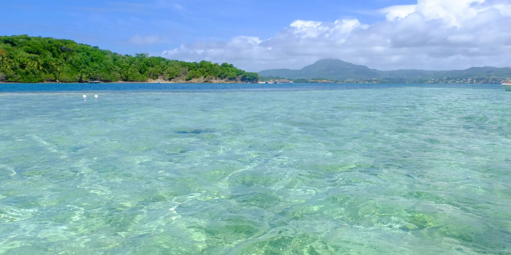

Depuis plus de 40 ans, le Rotary Club du François réunit des femmes et des hommes d'action dans la camaraderie et l'amitié, autour d'un objectif commun : servir la communauté par des projets concrets et durables.
Nos commissions pilotent des projets concrets au service de la Martinique, en cohérence avec les axes d'intervention du Rotary International.
Soutien aux familles, aux personnes en situation de précarité et aux structures d'accueil du territoire.
Accompagnement des clubs Rotaract et Interact, bourses d'études et programmes d'échange.
Campagnes de prévention, de dépistage et de sensibilisation auprès de la population.
Programmes de soutien scolaire et de lutte contre l'illettrisme dans les écoles du François.
Actions de préservation du littoral et de sensibilisation environnementale en Martinique.
Soutien à l'entrepreneuriat local et mise en réseau des acteurs économiques du territoire.

Le Rotary Club du François parraine le club Interact « La Yole », charté le 14 février 2023 sous la présidence d'Astrid BAPTE. Des jeunes de douze à dix-huit ans y choisissent eux-mêmes leurs actions et les mènent jusqu'au bout.
Le Rotary rassemble des professionnels et des leaders engagés, unis par la volonté d'agir pour l'intérêt général.
Chaque mois, les actions du club, le thème rotarien du moment et les rendez-vous à venir, directement dans votre boîte aux lettres. Un courriel par mois, pas davantage.